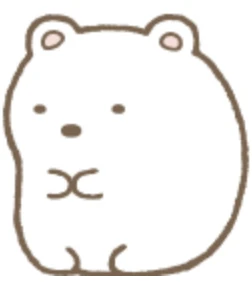

Shirokuma

Meet Shirokuma, a member of Sumikkogurashi.
Shirokuma, one of the many friends in the Sumikkogurashi universe, is a shy polar bear. Born in the North Pole,
it migrated southward in search of a warmer climate. Alongside its easygoing personality, it enjoys sipping hot tea in the corner. Additionally, it enjoys cooking meals
for its friends. Shirokuma values peace and quiet and will strive to priotize its introverted habits.
Admiration
-
In an effort to find a better suiting environment, Shirokuma left the comfort of its hometown (the North Pole) and followed only the
word of Penguin Real. It was able to eventually make it to the Corner and is now able to live a peaceful life with new friends and experiences.
Shirokuma is admiral in this way because it showcases how it is alright and even encouraged to go beyond one's comfort zone, especially if the
environment is no longer suitable. If Shirokuma could do it, so can you~
-
Shirokuma prioritizes its need for peace and quiet. One time, in an effort to be alone in the Corner, Shirokuma drew the Arm to claim the space.
Despite being captured by the Arm for having selfish intentions, Shirokuma demonstrates the importance of not being afraid to stand up for oneself
and for one's own interests.
-
Cooking, drinking tea, drawing, and caring for friends are Shirokuma's hobbies and passions. After its journey, Shirokuma is able to live a
life of content with simple pleasures and absolutely no drama. We can admire Shirokuma's minimalist life and emulate it help shape the life we
desire for ourselves.